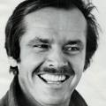

Майкл Кітон виконав головну роль Брюса Вейна / Бетмена у культових фільмах режисера Тіма Бертона: «Бетмен» (1989). Його гра зробила образ похмурого захисника Готема знаковим, попри початковий скепсис фанатів.
Джек Ніколсон зіграв культову роль Джокера (справжнє ім'я — Джек Нап'є) у фільмі «Бетмен» 1989 року, режисера Тіма Бертона. Його персонаж є головним антагоністом, гангстером, який після падіння в чан з хімікатами перетворюється на божевільного злочинця, що тероризує Готем.

Кім Бейсінгер зіграла роль журналістки Вікі Вейл (Vicki Vale) у фільмі Тіма Бертона «Бетмен» 1989 року. Її персонаж — фотожурналістка, яка приїжджає до Готема, щоб розслідувати діяльність Бетмена, і стає коханою Брюса Вейна (Майкл Кітон).

Джек Пеланс (Володимир Палагнюк) зіграв роль мафіозного боса Карла Ґріссома (Carl Grissom) у фільмі «Бетмен» 1989 року режисера Тіма Бертона. Ґріссом є кримінальним авторитетом, який керує Готем-Сіті, а згодом стає причиною трансформації Джека Нап'єра в Джокера (Джек Ніколсон).

Біллі Ді Вільямс виконав роль окружного прокурора Гарві Дента (Harvey Dent) у фільмі Тіма Бертона «Бетмен» 1989 року. Його персонаж з'являється у першій частині як союзник у боротьбі зі злочинністю, що передує його трансформації у лиходія Дволикого.

Роберт Вул (Robert Wuhl) виконав роль Олександра Нокса (Alexander Knox), наполегливого репортера газети «Ґотем Ґазетт», у фільмі Тіма Бертона «Бетмен» 1989 року. Його персонаж займався розслідуванням діяльності Бетмена разом із Вікі Вейл і виступав як один із провідних журналістів міста.